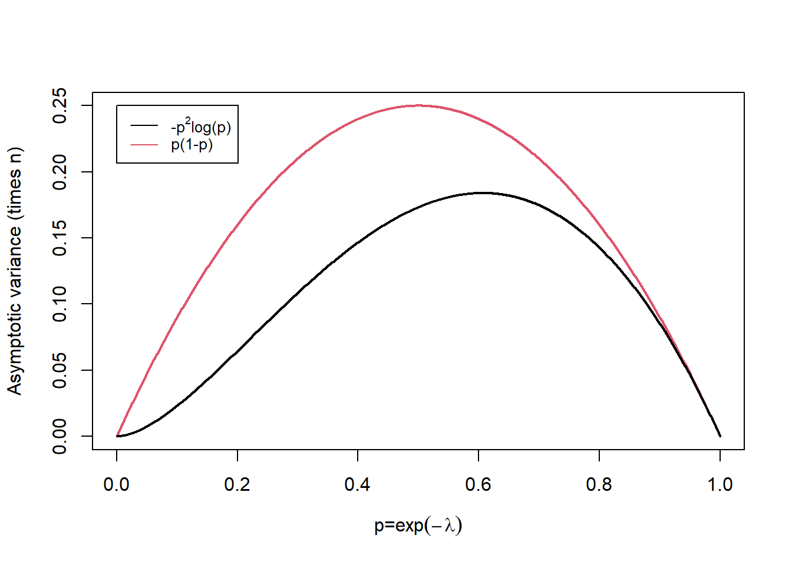

Chapter 11 Additional Properties of Estimators
11.1 Introduction
In this section, we introduce four key concepts associated with estimators, especially maximum likelihood estimators (MLE):
Sufficiency considers the question of what information from the data, \(\mathbf{x} = (x_1,x_2,\ldots,x_n)\) is sufficient to estimate a population parameter, \(\theta\), without loss of information. Often sufficient statistics will take the form of a summary statistic, for example, the mean.
Minimising the mean square error (MSE) of estimators is a desirable property. For unbiased estimators minimising the variance of the estimator is equivalent to minimising the MSE. We introduce the Cramer-Rao lower bound which is the minimum variance obtainable by an unbiased estimator and the concept of minimum variance unbiased estimators (MVUE) as estimators which obtain the Cramer-Rao lower bound.
For large \(n\), the MLE, \(\hat{\theta}\) is approximately normally distributed about the true population parameter \(\theta\) with variance determined by the second derivative of the likelihood. The variance of the asymptotic normal distribution coincides with the Cramer-Rao lower bound providing further support for using maximum likelihood estimation.
11.2 Sufficiency
Sufficient Statistic
Let \(\mathbf{X} = (X_1,X_2,\dots,X_n)\) where \(X_1, X_2, \ldots, X_n\) are i.i.d. random variables dependent on a parameter \(\theta\). A statistic \(T(\mathbf{X}) = T\) is sufficient for \(\theta\) if the conditional distribution of \(\mathbf{X}|T\) does not depend on \(\theta\), that is \[ f(x_1,x_2,\dots,x_n|T=t,\theta) = u(x_1,x_2,\dots,x_n|T=t),\] where \(u\) is a function of \(x_1,x_2,\dots,x_n\) only. Thus, \(T\) contains all the information about \(\theta\).
The key point is that a sufficient statistic, as the name suggests, is sufficient for the estimation of a parameter \(\theta\). This is particularly useful if the sufficient statistic is a low-dimensional summary statistic of the data. As the following examples show in many cases there is a one-dimensional summary statistic of the data \(\mathbf{x} = (x_1,x_2,\ldots,x_n)\) which is sufficient to estimate the population parameter of interest, \(\theta\). The Neyman-Fisher factorisation criterion provides easy to check conditions for sufficiency.
Neyman-Fisher factorisation criterion
The statistic \(T(\mathbf{X})\) is sufficient for \(\theta\) if and only if one can factor the likelihood function such that \[L(\theta) = h (\mathbf{x}) g(t,\theta),\] where \(h(\mathbf{x})\) does not depend on \(\theta\) (whenever \(L(\theta)>0\)) and \(g\) is a non-negative function of \(t\) and \(\theta\).
The Neyman-Fisher factorisation criterion is equivalent to the log-likelihood function being expressible in the form: \[l(\theta) = \log h(\mathbf{x}) + \log g (T(\mathbf{x}),\theta ) = H(\mathbf{x}) + G( T(\mathbf{x}),\theta ). \] Then if we differentiate \(l (\theta)\) with respect to \(\theta\), we have that \[ l^\prime (\theta) = \frac{d \;}{d \theta} l (\theta) = \frac{d \;}{d \theta}\left\{H(\mathbf{x}) + G( T(\mathbf{x}),\theta ) \right\} = \frac{d \;}{d \theta}G( T(\mathbf{x}),\theta ). \] Setting \(l^\prime (\theta)=0\) and solving to obtain the MLE \(\hat{\theta}\) is equivalent to solving \[ \frac{d \;}{d \theta}G( T(\mathbf{x}),\theta ) =0.\] We observe that \(H(\mathbf{x})\) plays no role in the computation of the MLE and the function \(G (\cdot, \cdot)\) is a function of the sufficient statistic, \(T(\mathbf{x})\) and \(\theta\) only.
Let \(X_1,X_2,\dots,X_n\) be a random sample from \(N(\theta,1)\). Show that \(\bar{X}\) is sufficient for \(\theta\).
Consider the likelihood function:
Therefore, letting \(h(\mathbf{x}) = (2 \pi)^{-n/2} \exp \left(-\frac{1}{2} \left( \sum_{i=1}^n x_i^2 \right) \right)\) and \(g(\bar{X},\theta) = \exp \left(-\frac{1}{2} \left( -2 \theta n \bar{x} + n \theta^2 \right) \right)\) we can factor the likelihood function. So, by the Neyman-Fisher factorisation criterion, \(\bar{X}\) is a sufficient statistic for \(\theta\).
Remember in Section 10.3, Example 10.3.7, we have shown that the sample mean is the MLE of \(\theta\) for \(N(\theta,1)\).
Let \(X_1,X_2,\dots,X_n\) be i.i.d. random variables from a Poisson distribution with parameter \(\lambda\). Show that \(\bar{X}\) is a sufficient statistic for \(\lambda\) using the Neyman-Fisher factorisation criterion.
If we let \(h(\mathbf{x}) = \left\{\prod\limits_{i=1}^n x_i ! \right\}^{-1}\) and \(g(\bar{X},\theta) = e^{-n\lambda} \lambda^{n \bar{x}}\), then we have factorised the likelihood function according to the Neyman-Fisher factorisation criterion. So, \(\bar{X}\) must be a sufficient statistic of \(\lambda\).
Note that
- Generally we prefer to use a sufficient statistic as an estimator for \(\theta\) since the sufficient statistic uses all of the sample information to estimate \(\theta\).
- Sufficient statistics always exist, since \(T(\mathbf{X}) = (X_1,X_2,\dots,X_n)\) is itself a sufficient statistic. However, we would prefer a statistic that has as low a dimension as possible. A sufficient statistic with the lowest possible dimensionality is called a minimal sufficient statistic.
- The MLE, if it exists, will always be a function of a sufficient statistic.
11.3 Minimum variance estimators
Given a population parameter does there exist a best estimator in general?
Recall that in our previous discussions in Section 9.3 on qualities of estimators we said we would prefer an estimator with as small an MSE as possible. Unfortunately, if we consider the class of all estimators for a particular parameter, there does not exist such an optimality criterion. If we decide to limit ourselves to particular classes of estimators then there do exist certain optimality criterion.
Let’s constrain ourselves to the class of unbiased estimators. Suppose that the random variables and their distributions satisfy the following regularity conditions:
- The range of the random variables does not depend on \(\theta\). The random variable \(X \sim U(0,\theta)\) is an example that does not satisfy this condition.
- The likelihood function is sufficiently smooth to allow us to interchange the operations of differentiation and integration.
- The second derivatives of the log-likelihood function exists.
Cramér-Rao inequality
Under the above regularity conditions if \(T(\mathbf{X})\) is an unbiased estimator of \(\theta\), then \[var( T(\mathbf{X}) ) \geq \frac{1}{I(\theta)},\] where \(I(\theta) = E \left[ - \frac{d^2 l(\theta)}{d\theta^2} \right]\).
Fisher’s information
\(I(\theta)\) is called the expected information or Fisher’s information.
Cramér-Rao lower bound
\(\frac{1}{I(\theta)}\) is called the Cramér-Rao lower bound.
The Cramér-Rao inequality implies that the smallest the variance of any unbiased estimator can become is \(1/I(\theta)\).
Minimum variance unbiased estimator (MVUE)
If any unbiased estimator \(T(\mathbf{X})\) is such that \(\text{Var}(T(\mathbf{X}))=1/I(\theta)\), then we say that \(T(\mathbf{X})\) is a minimum variance unbiased estimator (MVUE) as no other unbiased estimator will be able to obtain a smaller variance.
Suppose \(X_1,X_2,\dots,X_n\) are i.i.d. random variables from a Poisson distribution with parameter \(\lambda\). Does the maximum likelihood estimator \(\hat{\lambda} = \bar{X}\) achieve the Cramér-Rao lower bound?
Firstly note that
Therefore \(\bar{X}\) is an unbiased estimator. Now
Now, since \(X_i \sim \text{Poi}(\lambda)\), \(\text{Var}(\bar{X}) = \frac{\lambda}{n}\). Therefore, \(\bar{X}\) is a MVUE for \(\lambda\).
11.4 Asymptotic normality of the MLE
Asymptotic normality of the MLE
If \(\hat{\theta}\) is the MLE of \(\theta\), then under certain regularity conditions it can be shown that \[\sqrt{n}(\hat{\theta}-\theta) \longrightarrow N \left( 0, \frac{n}{I(\theta)} \right), \qquad \text{as } n \rightarrow \infty.\] Hence, approximately for sufficiently large sample sizes, \[\hat{\theta} \sim N \left( \theta, \frac{1}{I(\theta)} \right).\]
As a consequence the MLE has the following asymptotic properties:
- \(\hat{\theta}\) is asymptotically unbiased;
- \(\hat{\theta}\) is asymptotically fully efficient, that is the variance of \(\hat{\theta}\) approaches the Cramér-Rao lower bound:
\[\text{Var}(\hat{\theta}) \rightarrow I(\theta)^{-1}, \qquad \text{as } n \rightarrow \infty;\] - \(\hat{\theta}\) is asymptotically normally distributed.
Although the asymptotic properties of the MLE are quite good, the properties are only true for sufficiently large samples. The properties do not necessarily hold for small samples and for any finite sample they are approximations. The asymptotic normality of the MLE is an example of the Central Limit Theorem, and consequently the quality of the approximation will depend on the underlying distribution.
11.5 Invariance property
If \(\phi = g(\theta)\), where \(g\) is one-to-one monotonic function of \(\theta\), then \(\hat{\phi} = g(\hat{\theta})\) is the MLE of \(\phi\), and for large \(n\): \[ \hat{\phi} \approx N \left( \phi, \frac{ [g'(\theta)]^2 }{I(\theta)} \right),\] where \(g'(\theta) = \frac{d \;}{d\theta} g(\theta)\).
Note that for \(\hat{\phi} = g(\hat{\theta})\) to be the MLE of \(\phi\) it is not necessary for \(g\) to be strictly one-to-one. It is sufficient for the range of \(g\) to be an interval.
Properties of Poisson MLE
Let \(X_1,X_2,\dots,X_n\) be a random sample from a Poisson distribution with parameter \(\lambda\). We have shown \(\hat{\lambda}=\bar{X}\) is the MLE of \(\lambda\).
- What is its asymptotic distribution?
- Compute \(p= P(X_1 = 0)\).
- Find the MLE for \(P(X_1 = 0)\) and its asymptotic distribution.
- An alternative approach to estimate \(p=P(X_1=0)\) is the proportion of observations \(X_1, X_2, \ldots, X_n\) which are equal to 0, \[\tilde{p} = \frac{1}{n} \sum_{i=1}^n I(X_i =0), \] where \(I(A)=1\) if the event \(A\) occurs and 0 otherwise. Show that \(\tilde{p}\) is unbiased and find its asymptotic distribution.
Attempt Example 11.5.1: Properties of Poisson MLE and then watch Video 19 for the solutions.
Video 19: Properties of Poisson MLE
Solution to Example 11.5.1: MLE for Properties of Poisson MLE.
- According to the Asymptotic normality of the MLE Theorem, since \(\hat{\lambda}\) is the MLE of \(\lambda\), then \(\hat{\lambda} \rightarrow N\left( \lambda, \frac{1}{I(\lambda)} \right)\). We have shown that \(I(\lambda) = \frac{n}{\lambda}\), therefore, \(\hat{\lambda} \rightarrow N \left( \lambda, \frac{\lambda}{n} \right)\).
- We calculate
\[p= P(X_1 = 0) = \frac{e^{-\lambda} \lambda^0 }{0!} = e^{-\lambda}.\] - Set \(p = P(X_1 = 0) = e^{-\lambda} = g(\lambda)\). Then since the range of \(g\) is an interval, specifically \((0,\infty)\), the MLE of \(p\) is given by
\[\hat{p} = g(\hat{\lambda}) = e^{-\hat{\lambda}} = e^{-\bar{X}}.\] By the invariance property,
\[\hat{p} \rightarrow N \left(p, \frac{ \left[ g'(\lambda) \right]^2 }{I(\lambda)} \right),\] where \(g'(\lambda) = -e^{-\lambda}\). Therefore \(\hat{p} \rightarrow N \left( p, \frac{e^{-2\lambda}}{n/\lambda} \right)\). Using \(p = e^{-\lambda}\), then \(\lambda = -\log(p)\) and by substitution
\[\hat{p} \rightarrow N \left( p, \frac{ -p^2 \log(p) }{n} \right), \qquad \text{as } n \rightarrow \infty.\] - For an event \(A\) the function \(1_{\{A\}}\) (known as the indicator function of \(A\)) takes the value 1 if \(A\) occurs and 0 otherwise. Thus \(E[1_{\{A\}}] = P(A)\), the expectation for how likely the event \(A\) is to occur is simply the probability that the event \(A\) occurs. Compare with the Bernoulli distribution.
Therefore
\[\begin{eqnarray*} E[ \tilde{p}] &=& E \left[ \frac{1}{n} \sum_{i=1}^n 1_{\{ X_i=0\}} \right] \\ &=& \frac{1}{n} \sum_{i=1}^n E[1_{\{ X_i=0\}}] \\ &=& \frac{1}{n} n P(X_1 =0) = p, \end{eqnarray*}\] and \(\tilde{p}\) is an unbiased estimator.
Moreover, if \(Y = \sum_{i=1}^n 1_{\{ X_i=0\}}\), the number of observations equal to 0, then \(Y \sim {\rm Bin} (n,p)\). For large \(n\), the Central Limit Theorem (Section 7.2) states \(Y \approx N (np, np(1-p))\) and hence
\[ \tilde{p} = \frac{Y}{n} \approx N \left( p, \frac{p(1-p)}{n} \right).\] Comparing the asymptotic variances of \(\hat{p}\) and \(\tilde{p}\) as \(p = \exp(-\lambda)\) varies in Figure 11.1 we note that the asymptotic variance of \(\hat{p}\) is always smaller. That is, it is better to use information about the whole distribution \((\bar{X})\) rather than simply which observations are equal to 0 and those which are not. Note that as \(p \to 1\) corresponding to \(\lambda \to 0\) the difference between the variances becomes smaller.Figure 11.1: Asymptotic variance times sample size, n, for varying p.
Task: Session 6
Attempt the R Markdown file for Session 6:
Session 6: Properties of MLEs
Student Exercises
Attempt the exercises below.
Consider the situation where Bernoulli trials are available. The number of trials required before 5 successes are obtained can be modelled by the negative binomial distribution with parameters \(r=5\) and \(\theta\). The probability mass function of a negative binomial is:
Find the maximum likelihood estimator \(\hat{\theta}\) of \(\theta\) based on a random sample of \(n\) sets of trials. What are the maximum likelihood estimators of:
(a) the mean of the distribution \(5/\theta\), and,
(b) the quantity \(\theta^5\)?
Solution to Exercise 11.1.
and it is easily checked that \(l''(r/ \bar{x}) = -\sum_{i=1}^n x_i =<0\). In the present example, \(r=5\), so the MLE of \(\theta\) is \(\hat{\theta}=5/ \bar{x}\).
By the invariance property, the MLE of
- \(g_1(\theta) = 5/\theta\) is
\[ g_1 (\hat{\theta}) = \frac{5}{\hat{\theta}} = \bar{x}, \] - \(g_2(\theta) = {\theta}^5\) is
\[ g_2 (\hat{\theta}) = {\hat{\theta}}^5 = \left( \frac{5}{ {\bar {x}}} \right)^5. \]
To determine the amount that a particular type of bacteria is present in water one finds out whether or not any is present in multiple samples. Let \(\theta\) be the average number of bacteria per unit volume in the river, and assume that the bacteria are distributed at random in the water. Some \(n\) test tubes each containing a volume \(v\) of river water are incubated and tested. A negative test shows no bacteria whereas a positive test shows that at least one bacterium is present. If \(y\) tubes out of \(n\) tested give negative results, what is
the m.l.e. of \(\theta\)?
Hint.
If there are \(X\) bacteria in a volume \(v\) of river water thenSolution to Exercise 11.2.
Thus the MLE of \(\theta\) is \(\hat{\theta}=\frac{1}{v} \log \left( \frac{n}{y} \right)\).